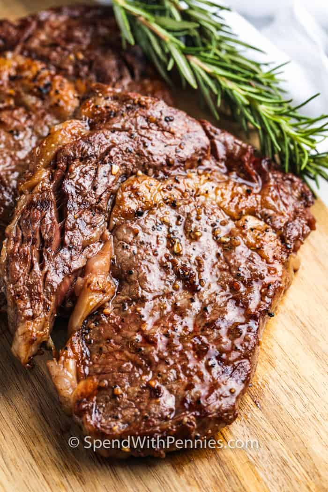

Ribeye Recipe

Description
Simple juicy ribeye steak cooked in the oven, grill or even air fryer, packed with flavour without needing a lot of fancy ingredients
Ingredients
- Ribeye steak
- Black pepper
- Butter
- Whatever seasoned salt you have
Steps
Two methods: Grill and Oven
Grill method
- Bring Steaks to room temperature and season per the recipe below
- Heat grill to medium heat. Season steaks and grill between 5 to 7 minutes on each side depending on rare to well-done
- Remove steaks, dot them with butter, and allow to rest about 5 to 10 min covered in aluminum foil before serving
Oven method
- Preheat the oven and cast iron skillet or ovenproof pan per the recipe below
- Sear the seasoned ribeye steaks for two minutes per side. Once browned on both sides, place in pan in oven and roast according to instructions below
- Remove pan and place cooked steaks on a plate and add butter pats to each piece. Make a foil tent and let them rest for 5 to 10 min. (Important to keep them nice and juicy)
Home